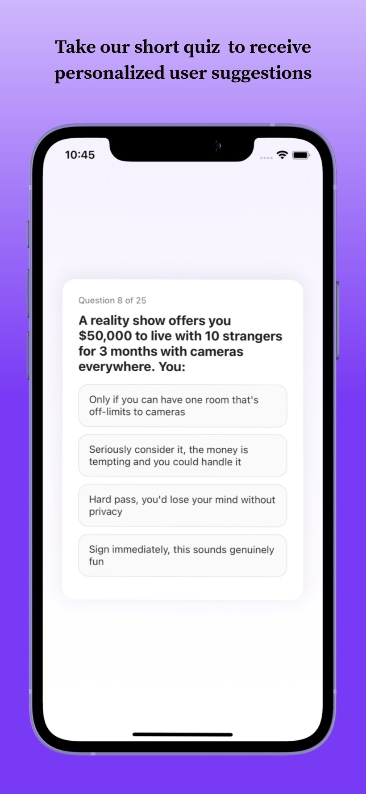
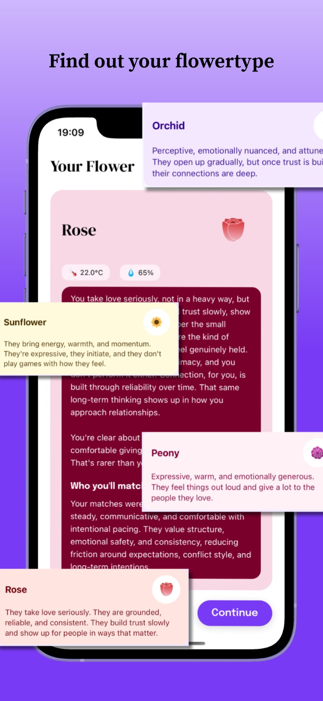
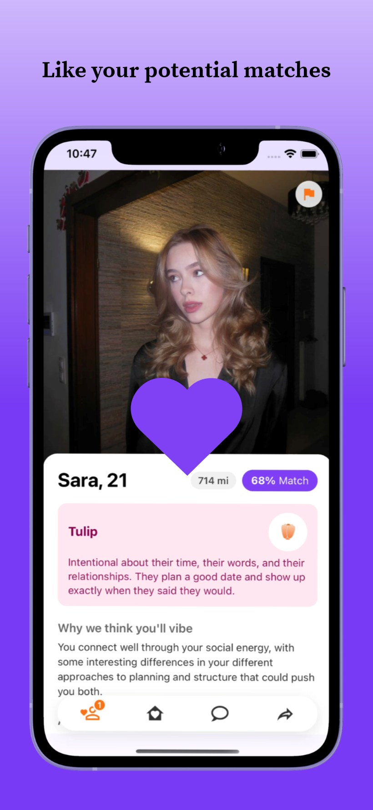
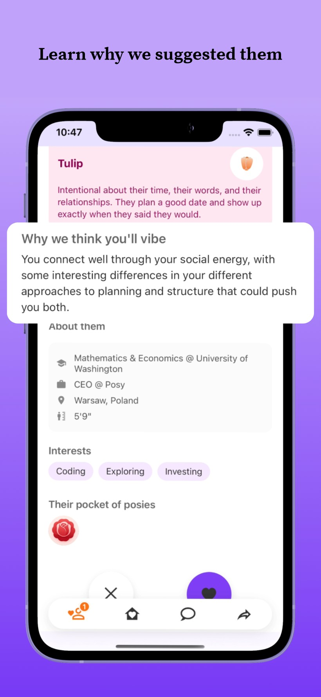
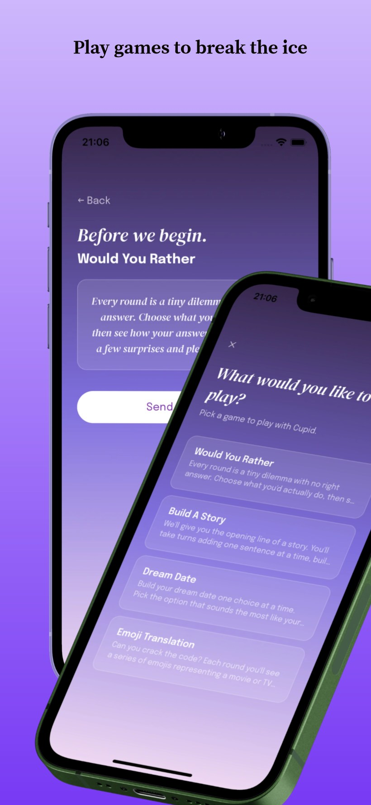
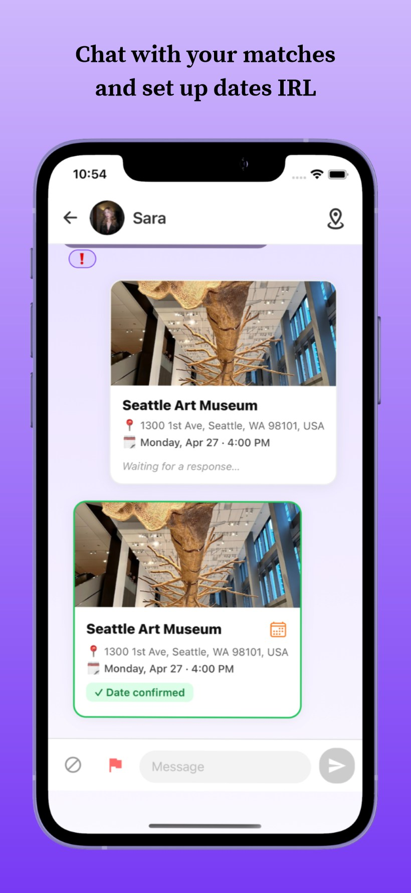
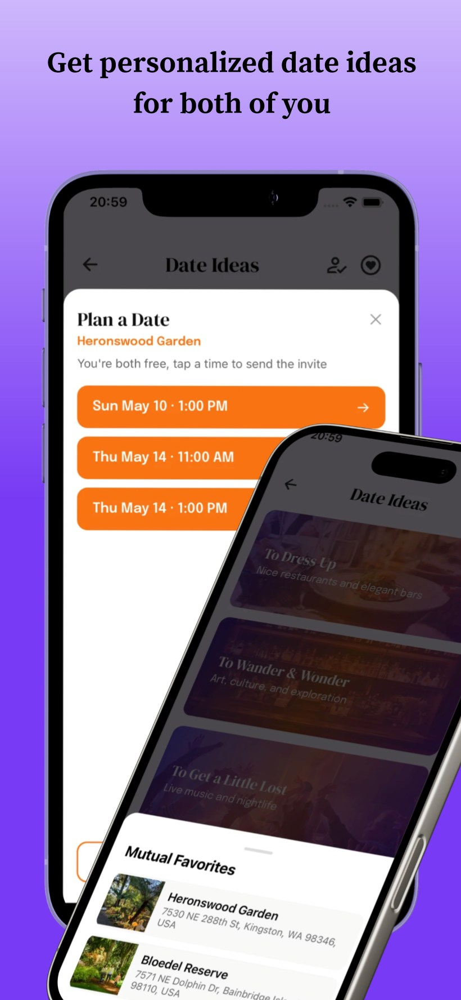
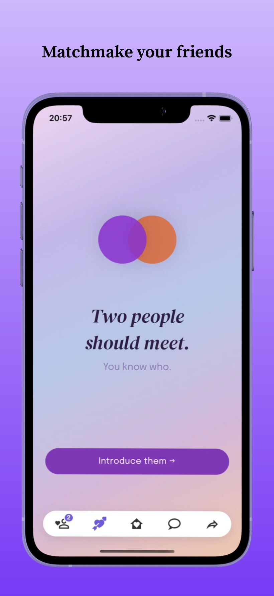
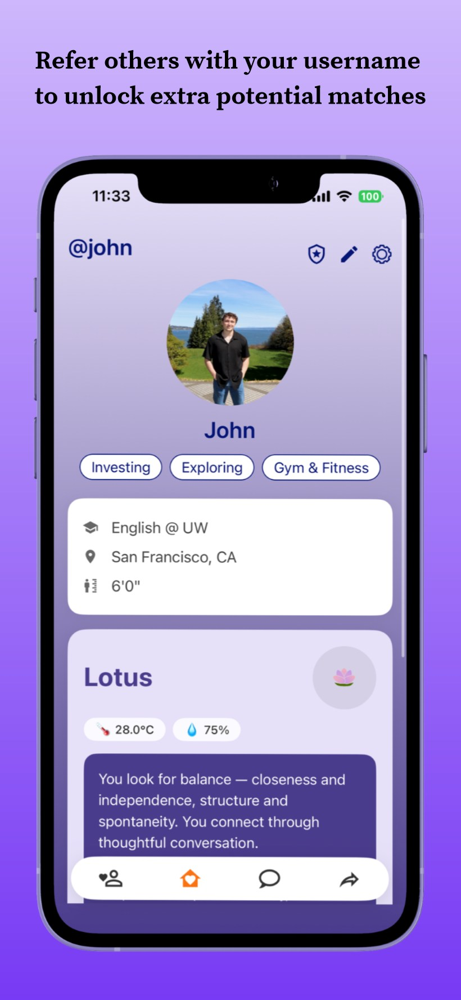

UI/UX Design / Jan 17, 2026
Posy Dating
A UW student-built dating app using a custom compatibility algorithm designed to help combat the Seattle Freeze — moving users beyond swipe-based matching by surfacing genuine personality fit, shared interests, and real date recommendations.

The challenge
Dating apps optimize for volume. Posy optimizes for intention. The design challenge was to build a product that slows the experience down — making compatibility legible, matching feel trustworthy, and the path from profile to real date feel human rather than gamified.
Approach
Every element — the aurora palette, the Didone serif, the daily match limit, the friend-introduction feature — reinforces the same positioning: dating at the pace of a real bloom. Nothing in the interface rushes the user toward a swipe.
"Dating, slowed down to the pace of a real bloom."
Posy is an intentional dating app for people tired of the swipe-grind. Instead of infinite faces, you meet a small, considered set each day — and your own friends can plant matches for you through Cupid, Posy's signature friend-introduction feature.
Every interaction is designed to feel warm, calm, and human, not transactional — Intentional. Warm. Non-thirsty. Friend-powered. This positioning drove every downstream decision: palette, typography, feature set, and copy tone.
Color
A pale lilac canvas, deep aubergine ink, and a single confident violet — lifted by the iridescent aurora field that spans every screen. The palette communicates calm and warmth, not urgency.
Typography
DM Serif Display pairs with Epilogue. The high-contrast Didone gives Posy a romantic, editorial voice; the low-contrast geometric sans keeps the interface calm and legible — high emotion up top, quiet function underneath.
Flower species
A small set of flower icons — rose, sunflower, tulip, and more — each map to a personality type, appearing across match cards, profiles, and onboarding to make compatibility legible at a glance.
The shipped product, told the way a first-time user meets it: nine App Store frames walking through the flowertype quiz, compatibility matching, ice-breaker games, Cupid friend-matchmaking, and planning a real date.









Understanding the challenge
Posy needed to feel distinct in a landscape dominated by fast, low-context swiping. The design challenge was to make compatibility legible, reduce friction during onboarding, and help users convert a match into a real-world plan.
Designing a seamless experience
The interface was structured around a clearer quiz flow, more intentional match insights, and curated date-spot recommendations — making the product feel less transactional and giving users stronger reasons to understand, message, and meet compatible matches.
Design solution
The final direction uses a mobile-first layout, direct navigation, and warm visual language to support meaningful discovery. The product communicates compatibility, simplifies decision-making, and creates a more guided path from profile setup to planning a date.